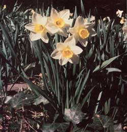

Bring an early spring to your surroundings, then exchange it for cash!
When you plant daffodils, you not only beautify your land, but-by establishing the perky flowering plants-you may well provide yourself with both a spring and fall cash crop. The hardy flowers will thrive almost anywhere: in your yard, in Bossie's pasture, in your woodlot, or along fence rows. What's more, you won't have to spray, prune, mulch, or weed the lovely harbingers of spring . . . and they naturalize themselves so quickly that-in just one year-it'll look as though they've been a part of your landscape all along!
EASY MONEY
Daffodils have to be one of the easiest plants in the world to raise: They are resistant to diseases and natural parasites, and neither cows nor horses (nor even rodents!) will touch them.
Better yet, the original bulbs simply divide themselves in half each year . . . so where you plant one daffodil this spring, a pair will bloom in 12 months. In order to keep this process going, you just remove one bulb and plant it elsewhere. It's a simple procedure, but necessary . . . since daffodils that are left undivided will not multiply as rapidly as will those that are separated, and may become so crowded that they stop reproducing.
And, of course, it's the daffodils' ability to multiply rapidly that will be the source of your income . . . because you can find ready markets in the springtime (for the cheerful end-of-winter blossoms) and-once your crop is established-in the fall (for your surplus bulbs).
AN OVERWHELMING CHOICE
Many bulb companies carry good selections of the over 2,000 varieties of this lovely perennial that are now available, but here's a list of some we've dealt with: John Messelaar Bulb Company (Dept. TMEN, Box 269, Ipswich, Massachusetts 01938) . . . Mary Mattison van Schalk (Dept. TMEN, Route 1, Box 181, Cavendish, Vermont 05142) . . . George W. Park Seed Co., Inc. (Dept. TMEN, Greenwood, South Carolina 29647) . . . and John Scheepers, Inc. (Dept. TMEN, 63 Wall Street, New York, New York 10005).
Write and ask for their catalogs. Then-f the choice among blossom sizes and colors overwhelms you-you might want to begin with a few of the types we've had particularly good luck with. Some of our favorites are Mount Hood, Twink, White Lion, Peeping Tom, February Gold, Actea, Beersheba, Carlton, Fortune, Glenshesk, Manco, Confuco, Walt Disney, Bobolink, and Tunis. (We've found that the miniature varieties, although cute, won't hold their own in heavy grass. So, as a rule of thumb, it's best to avoid any daffodil species that stand less than eight inches high when full grown . . . unless you plan to give the small plants special care.)
The daffodils you purchase should, like most flowering bulbs, be set out in the fall. They'll grow in almost any soil . . . however, if you're planting your crop in very poor earth, an application of wood ash or bone meal will greatly increase the size and the quantity of your spring blooms.
An easy way to lengthen the blooming span of your plants-as well as up your springtime cash inflow-is to vary the depth at which you plant the bulbs. If you "stagger" them, placing the plants from one to six inches deep, you can increase your marketing season by up to three or four weeks.
It's a good idea, too, to keep careful records of exactly what varieties you plant where . . . so that when you're ready to sell bulbs, you can do so without making mistakes. (Errors are all too easy-since the plants are dug in the fall, when no identifying blooms are present-and it's both unbusinesslike and embarrassing to sell a White Lion that comes up February Gold!)
For the first few years, of course, you probably will market only the flowers, as each bulb sold in the fall will mean one less blossom in the spring. But, when the time comes that you have all the stock that you want to maintain, a small classified ad in the local paper will help you quickly find buyers for your surplus bulbs.
SELLING SPRINGTIME
Once you've planted your crop, be sure to save all your one-gallon paper or plastic milk containers during the course of the following winter.
Why? Well, let's say it's early spring . . . your daffodils start to blossom . . . and you're ready to go to market with the flowers themselves. How do you go about it? First, cut the tops off all the jugs and cartons you've collected, cover the gallons with foil, add water, and your packaging material is complete.
Next, gather your flowers with long stems, fasten them in bunches of a dozen each (with rubber bands), put six bunches in every milk container, walk into a grocery store with a couple of cartons in hand . . . and you'll have the winter-weary manager and all the employees simply delighted with your wares, which-after all-will give the store a bright, springtime appearance. In fact, we've never had anyone refuse our product when the blooms were offered on consignment!
We wholesale our flowers for between 40 cents and 50 cents a bunch. That may not seem like much cash, but you must also consider that we usually leave 72 bunches at each store . . . and that we average a 90% sale within four days!
Our bulb prices vary according to what we paid for the originals, and costs fluctuate greatly. We also take into consideration the work and time that have been devoted to each variety. Even so, we can almost always offer our bulbs locally for less than customers would pay through mail order . . . consequently, they sell pretty fast.
We think it's hard to beat daffodils as an extra income venture. After all, what other crop can add such golden glory to your homestead, farm, or front yard, and-at the same time-give you a chance to cash in on it . . . twice a year?
|
 |
|
|